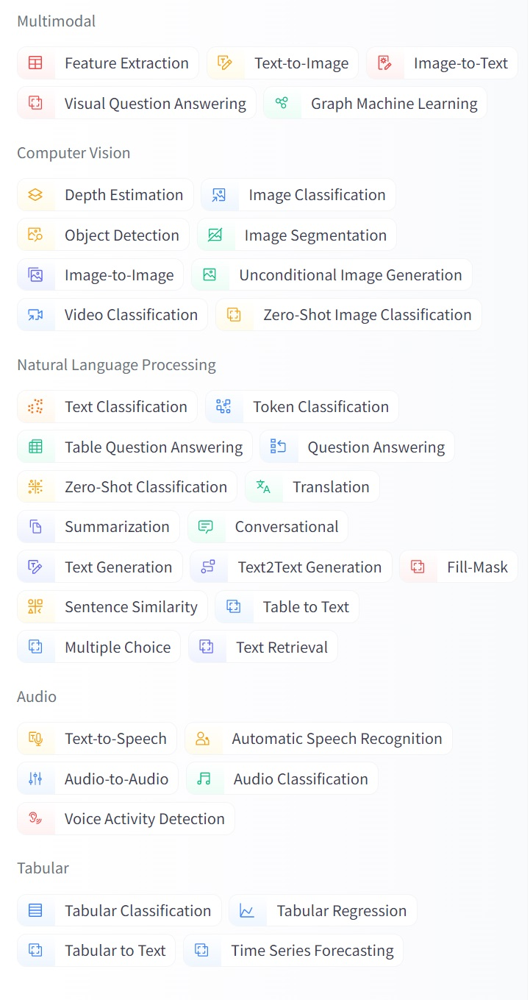
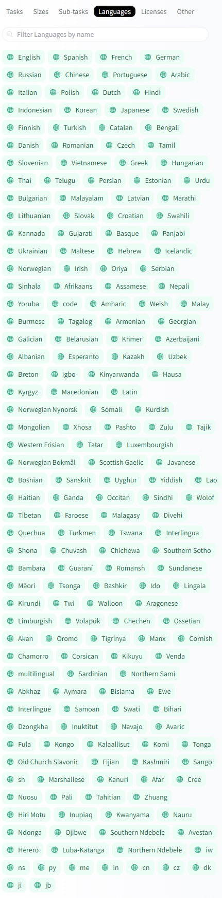
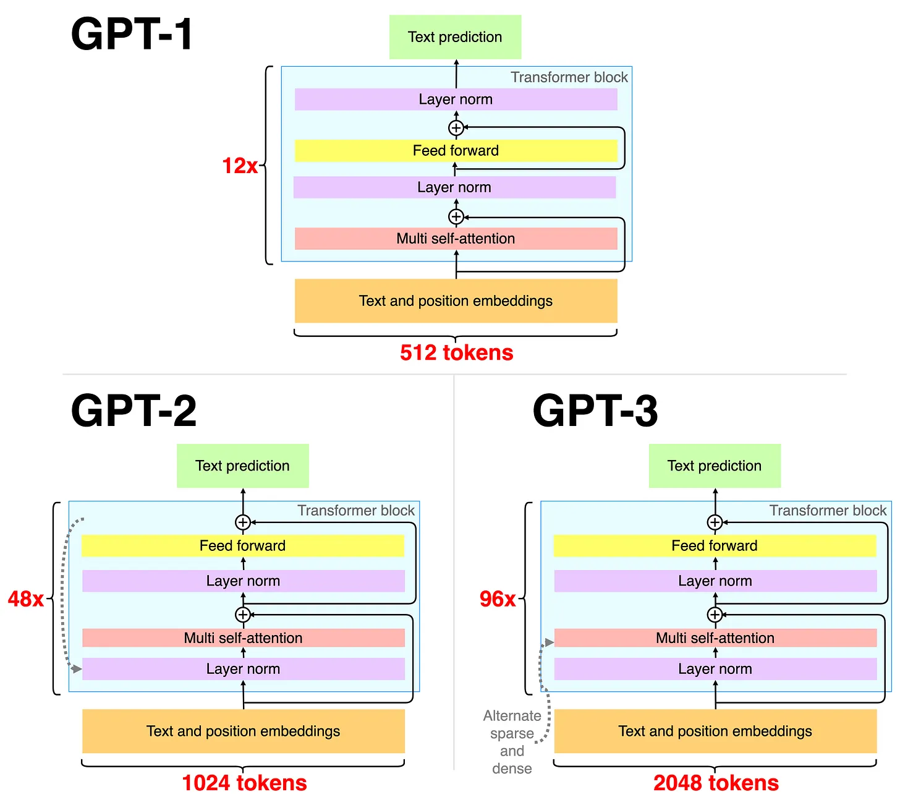
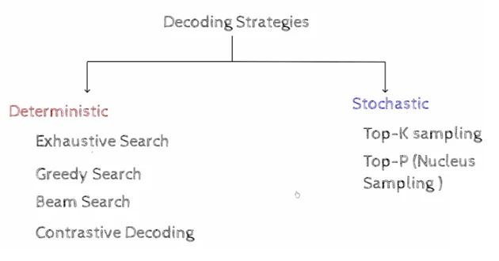
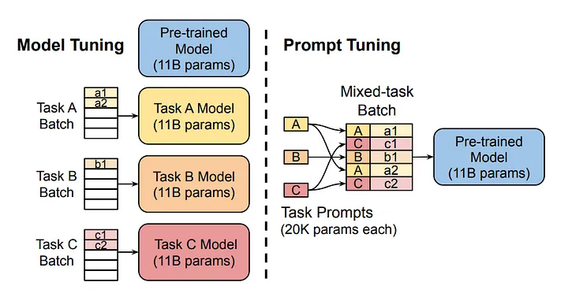
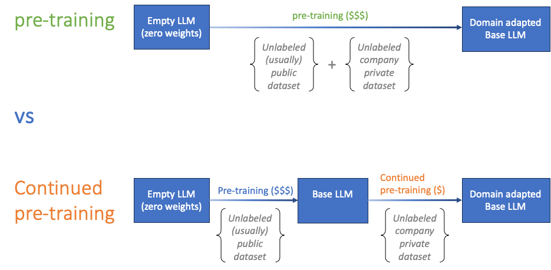
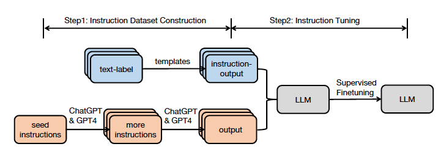
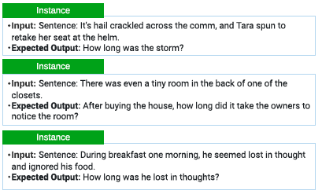
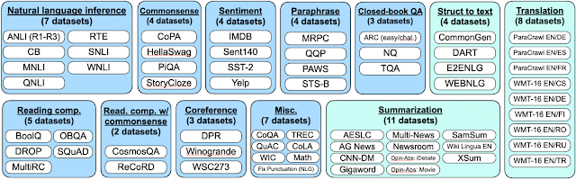
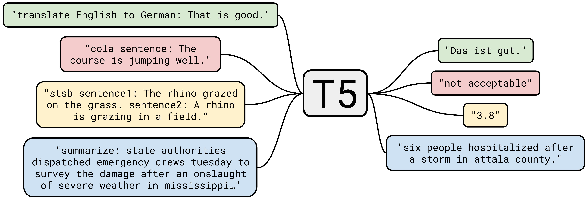

T4. Repositorios y Tecnologías de Modelos (Generativos) Preentrenados
Contents
T4. Repositorios y Tecnologías de Modelos (Generativos) Preentrenados#
Nota
Lee con atención el tema 4 del bloque 3. Realiza las lecturas propuestas y finalmente contesta el cuestionario que encontrarás en la sección de evaluación relativo a este tema, el cual se encuentra en el índice del bloque 3. En la clase presencial repasaremos los conceptos teóricos principales correspondientes a la sesión. Apertura el 10/04/2025- Cierre 23:59 del 07/05/2025 (el día anterior a la clase presencial).
Tiempo de dedicación: 3 horas (asíncrona) + 2 horas trabajo independiente
Contenidos:
Introducción#
Huggingface.co una compañía centrada en el PLN la cual ha desarrollado las librerías Transformers, centralizado datasets y ha creado modelos de aprendizaje pre-entrenados disponibles a través de sus librerías de programación. Las librerías de Huggingface actualmente dan soporte a empresas muy importantes del mercado tecnológico. Ver https://huggingface.co/.
Repositorio de Datasets#
Proporciona conjuntos de datos para muchas tareas de PLN como clasificación de texto, respuesta a preguntas, modelado de lenguaje, etc.
Instalación de librería de manipulación de datasets
Para la instalación de la librería de manipulación de datasets se debe ejecutar la siguiente instrucción pip:
>>> pip install datasets
Para asegurarnos de que Transformers dataset se ha instalado correctamente es necesario ejecutar la siguiente instrucción:
>>> python -c "from datasets import load_dataset; print(load_dataset('squad', split='train')[0])"
Esta instrucción debe descargar la versión 1 del conjunto de datos de respuesta a preguntas de Stanford, cargar su división de entrenamiento e imprimir el primer ejemplo de entrenamiento de la siguiente manera:
{'id': '5733be284776f41900661182', 'title': 'University_of_Notre_Dame', 'context': 'Architecturally, the school has a Catholic character. Atop the Main Building\'s gold dome is a golden statue of the Virgin Mary. Immediately in front of the Main Building and facing it, is a copper statue of Christ with arms upraised with the legend "Venite Ad Me Omnes"...', 'question': 'To whom did the Virgin Mary allegedly appear in 1858 in Lourdes France?', 'answers': {'text': array(['Saint Bernadette Soubirous'], dtype=object), 'answer_start': array([515], dtype=int32)}}
Listar datasets disponibles en el repositorio#
Para listar los conjuntos de datos disponibles es necesario ejecutar la siguiente función datasets.list_datasets() que pertenece a la clase datasets.
>>> from datasets import list_datasets
>>> datasets_list = list_datasets()
>>> len(datasets_list)
656
>>> print(', '.join(dataset for dataset in datasets_list))
aeslc, ag_news, ai2_arc, allocine, anli, arcd, art, billsum, blended_skill_talk, blimp, blog_authorship_corpus, bookcorpus, boolq, break_data,
c4, cfq, civil_comments, cmrc2018, cnn_dailymail, coarse_discourse, com_qa, commonsense_qa, compguesswhat, coqa, cornell_movie_dialog, cos_e,
cosmos_qa, crime_and_punish, csv, definite_pronoun_resolution, discofuse, docred, drop, eli5, empathetic_dialogues, eraser_multi_rc, esnli,
event2Mind, fever, flores, fquad, gap, germeval_14, ghomasHudson/cqc, gigaword, glue, …
Otra alternativa es:
Ir a la web https://huggingface.co
Seleccionar el menú Datasets: https://huggingface.co/datasets
Filtrar por categoría, idioma, tarea y/o licencia
¿Cómo cargar datasets?#
Haciendo uso de la función load_dataset se nos permite recuperar cualquier dataset registrado en el repositorio. Por ejemplo, el dataset MRPC que ha sido proporcionado en el índice de referencia GLUE (https://gluebenchmark.com/leaderboard).
>>> from datasets import load_dataset
>>> dataset = load_dataset('glue', 'mrpc', split='train')
O podemos ver otro ejemplo como el de eHealth-KD
>>> from datasets import load_dataset
>>> dataset = load_dataset("ehealth_kd")
No obstante, la librería datasets permite además cargar conjuntos de datos propios que no formen parte del repositorio. Por ejemplo:
>>> from datasets import load_dataset
>>> dataset = load_dataset('csv', data_files='my_file.csv')
Para más detalles sobre las distintas funciones y parámetros permitidos para manipular datasets ver la siguiente documentación:
Tareas, subtareas e idiomas de datasets#
Categorías: En este repositorio podemos encontrar un amplio catalogo de tareas (categorías) por las cuales filtrar y especificar el tipo de dateset que estamos buscando. Hemos de resaltar que estos datasets existen originalmente en diferentes formatos, nos obstante en una vez incluido en este repositorio, el formato es estandar. Por tal motivo, a través de las librías de manipulación (las mencionadas enteriormente) que ofrece Huggingface, podemos acceder a ellos y gestionarlos. Además, estos datasets se encuentran caracterizados por idioma, subtarea en la que se puede utilizar y la licencia de uso.
{kind=link}
Figura 1. Categorías generales (o tareas) que permiten el filtro de datasets
Más de 134 tareas y más de 194 idiomas:
{kind=link}
Figura 2. Idiomas de los datasets
Repositorio de Modelos pre-entrenados#
La biblioteca de Transformers permite el uso de modelos previamente entrenados para tareas de Comprensión del lenguaje natural (NLU), i.e. como analizar el sentimiento de un texto, y Generación del lenguaje natural (NLG), i.e. como completar un mensaje con texto nuevo o traducir a otro idioma. A groso modo listamos los modelos que nos podemos encontrar
Análisis de sentimiento: Conocer si un texto es positivo o negativo
Generación de texto (en inglés): proporcionar un mensaje para el cual el modelo generará un texto.
Reconocimiento de entidades nombradas (NER): Dado en una oración de entrada se etiqueta cada palabra con la entidad que esta representa (persona, lugar, organización, etc.)
Respuesta a preguntas: Teniendo en cuenta un modelo de un contexto determinado, dado un pregunta se obtiene una respuesta.
Relleno de texto con máscara: Dado un texto con palabras enmascaradas (p. Ej., Reemplazado por [MÁSCARA]), completar los espacios en blanco.
Resumen: Generación de un resumen a partir de texto extenso.
Traducción: Traducción de un texto a otro idioma.
Extracción de características: Obtener una representación tensorial del texto. Tomado de https://huggingface.co/transformers/quicktour.html
Listado de tareas tal y como las podemos encontrar en el repositorio: El listado de tareas, como categorías, en las que podemos filtar los distintos modelos preentrenados que ofrece el repositorio Huggingface, es igual de amplio que el de los datasets. Como podemos observar, a partir de 2022 tal y como se describe más adelante, en el siguiente imagen este repositorio no solo ofrece modelos prentrenados para el modelado del lenguaje, sino también para desarrollar tareas de distintas modalidades: multimodal, lenguaje, audio, visión (imagen), datos estructurados (tabulados), y otros.

Figura 3. Tareas filtro modelos
Idiomas para los que se han entrenado los modelos: El listado de idiomas,como categorías, en las que podemos filtar los distintos modelos preentrenados que ofrece el repositorio Huggingface, es igual de amplio que el de los datasets.
Una explicación detallada sobre cada una de estas tareas y ejemplos de uso con Huggingface Transformer la podemos encontrar en el siguiente enlace:
Huggingface a partir de 2022 A mediados de 2022 esta plataforma federativa da un paso agigantado expandiendo datasets y modelos preentrenados de solo ofrecer recursos para la modalidad de Procesamiento del Lenguaje Natural, a ofrecer recursos Multimodales, Visión por Computadora, Procesamiento de Audio, Procesamiento de datos Tabulares y para Aprendisaje por reforzamiento.
En la mayoría de los casos se ofrece una ejemplo de uso y documentación. Poner en marcha cualquiera de estas tareas, reajustando o no los modelos prentrenados que se ofrecen en esta plataforma, se encuentra bien documentado y ejemplificado en ella: Ver Categorías https://huggingface.co/tasks

Figura 4. Categorías de documentaciones agrupadas por tareas y modalidades
Ejemplo de Análisis de Sentimientos con Huggingface Transformer:
>>> from transformers import pipeline
>>> classifier = pipeline('sentiment-analysis')
>>> classifier('We are very happy to show you the 🤗 Transformers library.')
[{'label': 'POSITIVE', 'score': 0.9997795224189758}]
Si os fijáis hemos cargado un modelo pre-entrenado a través del pipeline sentiment-analysis para utilizarlo como clasificador. Este modelo se puede reentrenar a escenarios específicos si queremos realizando un ajuste sobre un nuevo corpus. Para más detalles ver la clase práctica bloque3_p3_SA-Transformers-Training-FineTuning
Si queremos que el pipeline sea multilingue, podemos indicar el modelo exacto que contemple un diccionario de este tipo y el pipeline lo ensamblará internamente. Mirad el siguiente ejemplo:
>>> from transformers import pipeline
>>> classifier = pipeline('sentiment-analysis', model='nlptown/bert-base-multilingual-uncased-sentiment' )
>>> classifier('Estoy muy triste')
[{'label': '1 star', 'score': 0.7241697907447815}]
Para otras tareas como Rellenado de Máscaras podemos ver como podemos simplemente indicar el tipo de tarea para que el pipeline seleccione el tipo de configuración más adecuada a esta y el modelo que queremos aplicarle. Con solo cambiar el modelo base podemos hacer esta tarea unilingue a multilingue o cambiar de idioma. Ver el ejemplo a continuación:
>>> from transformers import AutoModelWithLMHead, AutoTokenizer
>>> model = AutoModelWithLMHead.from_pretrained('mrm8488/RuPERTa-base')
>>> tokenizer = AutoTokenizer.from_pretrained("mrm8488/RuPERTa-base", do_lower_case=True)
>>> from transformers import pipeline
>>> pipeline_fill_mask = pipeline("fill-mask", model=model, tokenizer=tokenizer)
>>> pipeline_fill_mask("España es un país muy <mask> en la UE")
[{'score': 0.19951821863651276,
'sequence': 'España es un país muy importante en la UE',
'token': 1560,
'token_str': ' importante'},
{'score': 0.04137842729687691,
'sequence': 'España es un país muy grande en la UE',
'token': 2741,
'token_str': ' grande'},
{'score': 0.029216745868325233,
'sequence': 'España es un país muy pequeño en la UE',
'token': 2948,
'token_str': ' pequeño'},
{'score': 0.02563760057091713,
'sequence': 'España es un país muy popular en la UE',
'token': 5782,
'token_str': ' popular'},
{'score': 0.022264542058110237,
'sequence': 'España es un país muy antiguo en la UE',
'token': 5240,
'token_str': ' antiguo'}]
Listado de Pipelines#
En Huggingface podemos encontrar una serie de Pipelines ya preparados para enfrentar tareas concretas a los cuales les podemos suministrar distintos modelos y tokenizadores transformes. Ver ejemplos: https://huggingface.co/transformers/main_classes/pipelines.html
¿Cómo buscar y reutilizar modelos pre-entrenados en la plataforma?#
A continuación, se listan los pasos a seguir:
Dirigirse al repositorio https://huggingface.co/
Seleccionar el menú
modelsque nos llevará a https://huggingface.co/modelsFiltrar el listado de modelos según la tarea, idioma, librería (Pytorch o TensorFlow), dataset sobre el que fue entrenado, o licencia. Por ejemplo: tarea
Text Classification; idiomaes.Elegir un modelo de la lista. Por ejemplo:
bert-base-multilingual-uncased-sentimentObtendremos la documentación necesaria para utilizar el modelo.
Conociendo el nombre del modelo a utilizar entonces podemos hacer uso de este a través de la librería Transformer. En la propia documentación se aporta el código de ejemplo para hacer uso del modelo y en algunos casos una interfaz para probarlo:
from transformers import AutoTokenizer, AutoModelForSequenceClassification
tokenizer = AutoTokenizer.from_pretrained("nlptown/bert-base-multilingual-uncased-sentiment") # cargando el toquenizador basado en el modelo preentrenado
model = AutoModelForSequenceClassification.from_pretrained("nlptown/bert-base-multilingual-uncased-sentiment") # cargando del modelo preentrenado
Configuraciones de modelos transformers#
Los modelos pre-entrenados que se brindan en el repositorio se basan en alguna de las arquitecturas Transformers descrita en la documentación del repositorio (https://huggingface.co/docs). Si tomamos como referencia la arquitectura de modelo Transformer DistilBERT podemos conocer cómo gestionar los distintos parámetros, configuraciones de red neuronal, tokenizador y ejemplos documentados para cada tipo de tarea, tal y como podemos encontrar en el siguiente enlace (https://huggingface.co/course/chapter7/).
>>> # !pip install transformers
>>> from transformers import DistilBertTokenizer, DistilBertModel
>>> import torch
>>> tokenizer = DistilBertTokenizer.from_pretrained('distilbert-base-uncased') # cargando de toquenizador basado en el modelo preentrenado
>>> model = DistilBertModel.from_pretrained('distilbert-base-uncased') # cargando el modelo preentrenado
>>> inputs = tokenizer("Hello, my dog is cute", return_tensors="pt")
>>> outputs = model(**inputs)
>>> last_hidden_states = outputs.last_hidden_state
>>> print(last_hidden_states)
tensor([[[-1.8296e-01, -7.4054e-02, 5.0267e-02, ..., -1.1261e-01,
4.4493e-01, 4.0941e-01],
[ 7.0631e-04, 1.4825e-01, 3.4328e-01, ..., -8.6039e-02,
6.9475e-01, 4.3353e-02],
[-5.0721e-01, 5.3086e-01, 3.7163e-01, ..., -5.6287e-01,
1.3756e-01, 2.8475e-01],
...,
[-4.2251e-01, 5.7314e-02, 2.4338e-01, ..., -1.5223e-01,
2.4462e-01, 6.4155e-01],
[-4.9384e-01, -1.8895e-01, 1.2641e-01, ..., 6.3241e-02,
3.6913e-01, -5.8252e-02],
[ 8.3269e-01, 2.4948e-01, -4.5440e-01, ..., 1.1998e-01,
-3.9257e-01, -2.7785e-01]]], grad_fn=<NativeLayerNormBackward>)
Es importante conocer que las configuraciones de modelos Transformer ya cuentan con modelos base pre-entrenados. En el caso de DistilBERT podemos encontrar distilbert-base-uncased.
Tecnologías de generación#
GPT#
GPT significa “Generative Pretrained Transformer”. Es un modelo de lenguaje que utiliza técnicas de deep learning para generar texto de manera autónoma. GPT ha sido entrenado en una amplia cantidad de contenido textual. !Es orientado a liberías! Es decir, se puede incorporar el componente en tu propia aplicación.
GPT-1: Es la primera versión de GPT, entrenado con 117 millones de parámetros. Aunque es significativamente más limitada que las versiones posteriores, aún es capaz de generar texto aceptable en muchos contextos. La arquietectura de GPT-1 es principalmente un conjunto de 12 bloques de transformadores decodificadores colocados uno tras otro (ej. 12x ver la imagen). Los datos de texto se codifican mediante una codificación de pares de bytes adaptada a caracteres. La incrustación de posición es aprendida, en lugar de la típica sinusoidal estática. La longitud máxima para tokens consecutivos es 512. La capa superior es simplemente una capa softmax adaptada a la tarea de aprendizaje específica.
GPT-2: Es la segunda versión de GPT, con solo 1.5 mil millones de parámetros. Es capaz de generar texto coherente y a menudo convincente. GPT-2 tiene básicamente la misma arquitectura que GPT-1, pero el modelo más grande contiene 48 bloques(48x ver la imagen) de transformadores. La segunda capa de normalización se mueve a la primera posición en un bloque y el último bloque contiene una capa de normalización adicional. Los pesos se inicializan de forma ligeramente diferente y se aumenta el tamaño del vocabulario. El número de tokens consecutivos se incrementa a 1024.
GPT-3: Es la tercera versión de GPT y es uno de los modelos de lenguaje más grandes y avanzados jamás entrenados. Tiene más de 175 mil millones de parámetros, lo que le permite generar texto muy convincente en una amplia variedad de contextos. GPT-3 tiene la misma arquitectura que GPT-2, pero el número de bloques aumentó a 96 en el modelo más grande y el tamaño del contexto (número de tokens consecutivos) aumentó a 2048. Las capas de autoatención de varios cabezales se alternan entre los típicos densos los escasos y los dispersos.
…
GPT-1 se entrena de manera autosupervisada (aprende a predecir la siguiente palabra en datos de texto) y se ajusta de manera de aprendizaje supervisado. GPT-2 se entrena de forma totalmente autosupervisada, centrándose en la transferencia de zero-shot y GPT-3 se entrena previamente de manera autosupervisada explorando un poco más few-shots fine-tuning.
{kind=link}
Figura 5. Arquitecturas GPT. Fuente https://newsletter.theaiedge.io/p/the-chatgpt-models-family
Además de estas versiones, también existen variantes más pequeñas de GPT para diferentes usos, como GPT-3 Lite y GPT-2 Medium. Cada una de estas variantes tiene un tamaño y capacidad diferente, lo que las hace más adecuadas para diferentes aplicaciones y escenarios.
Entrenamiento del GPT#
GPT-1 está preentrenado en el conjunto de datos de BooksCorpus, que contiene ~7000 libros que suman ~5 GB de datos: https://huggingface.co/datasets/bookcorpus.
GPT-2 se entrena previamente con el conjunto de datos de WebText, que es un conjunto más diverso de datos de Internet que contiene ~8 millones de documentos para aproximadamente ~40 GB de datos: https://huggingface.co/datasets/openwebtext
GPT-3 utiliza una versión ampliada del conjunto de datos de WebText, dos corpus de libros basados en Internet que no se divulgan y la Wikipedia en inglés que constituyó ~600 GB de datos.
La implementación de GPT-2 se puede encontrar en los siguientes repositorios:
TensorFlow por OpenAI: https://github.com/openai/gpt-2/blob/master/src/model.py
PyTorch por Andrej Karpathy: https://github.com/karpathy/minGPT/blob/master/mingpt/model.py
A continuación se muestra un ejemplo de uso de GPT2 en un Pipeline:
from transformers import pipeline, set_seed
generator = pipeline('text-generation', model='gpt2')
set_seed(42)
generator("My name is", max_length=30, num_return_sequences=5)
GPT-3 API se encuentra disponible en el siguiente enlace: https://platform.openai.com/docs/introduction/overview
Ventajas#
Alto rendimiento en tareas de lenguaje natural: GPT está entrenado en una gran cantidad de texto en internet, lo que le permite desarrollar una comprensión profunda del lenguaje natural y su uso en diferentes contextos. Esto hace que mejore la capacidad de rendimiento y calidad en tareas como la traducción automática, la generación de texto y la respuesta a preguntas.
Facilidad de uso: GPT es un modelo pre-entrenado, lo que significa que no es necesario entrenarlo desde cero para cada tarea específica. Esto significa que es más fácil de usar para los desarrolladores y requiere menos recursos de hardware y tiempo de entrenamiento.
Adaptabilidad: GPT puede ser finetuneado o adaptado a diferentes tareas y contextos específicos. Esto permite que el modelo se ajuste a los requisitos específicos de cada proyecto y mejore su rendimiento.
Capacidad generativa: GPT es un modelo generativo, lo que significa que es capaz de generar texto de forma autónoma. Esto es útil en una variedad de aplicaciones, como la generación de contenido, la creación de diálogos virtuales y la respuesta a preguntas.
Desventajas#
Bias y desigualdades: Al estar entrenado en una gran cantidad de texto en internet, GPT puede incorporar los sesgos y desigualdades presentes en la fuente de datos.
Inseguridad: GPT es un modelo de aprendizaje automático, lo que significa que su rendimiento puede ser afectado por la calidad y la representatividad de la fuente de datos utilizada para su entrenamiento. Además, el modelo puede ser vulnerable a ataques y manipulaciones, como la generación de texto falsificado o la respuesta a preguntas inapropiadas.
Costos computacionales: GPT es un modelo grande y complejo que requiere una gran cantidad de recursos computacionales para su entrenamiento y uso. Esto puede resultar en costos elevados para el hardware y la energía, lo que puede ser un obstáculo para algunos usuarios.
Limitaciones en la comprensión del contexto: Aunque GPT ha sido entrenado en una gran cantidad de texto, todavía puede tener dificultades para comprender el contexto en el que se utiliza el lenguaje natural. Esto puede resultar en respuestas poco precisas o inapropiadas en ciertos contextos.
Decodificación de GPT#
La decodificación de GPT es el proceso de generar texto a partir de un modelo de lenguaje pre-entrenado. Existen dos estrategias:
Determinísticas
Estocáticas
En el siguiente material <<Decoding Strategies of all Decoder only Models (GPT)>> se presenta un exaustiva expliación de cada una de ellas. Dicho material es de obligatorio estudio.
 Figura 6. Estrategias de decodificación modelos GPT.
En el siguiente cuaderno de trabajo se utiliza GPT-2 para generar texto de diferentes alternativas de texto.
Se resumen a continuación esas formas de decodificación:
Greedy Search: En el método de búsqueda greedy (avaricioso), se selecciona la palabra con la probabilidad más alta en cada paso. Este método es rápido, pero puede generar texto que no es coherente o relevante. Este método elige la palabra con la probabilidad más alta en cada paso.
Beam Search: En el método de búsqueda de haz, se basa en la búsqueda avariciosa, pero en lugar de seleccionar la palabra con la probabilidad más alta en cada paso, se seleccionan las k palabras con la probabilidad más alta y se generan k secuencias parciales. Luego, se selecciona la secuencia parcial con la probabilidad más alta en cada paso. Se define el parámetro
num_beamspara controlar el número de secuencias parciales generadas en cada paso. Además, este método permite definir parámetros comono_repeat_ngram_sizepara evitar la repetición de n-gramas en el texto generado onum_return_sequencespara controlar el número de secuencias generadas.Sampling: El método de muestreo selecciona la palabra en cada paso de acuerdo con su probabilidad. Se define el parámetro
temperaturepara controlar la aleatoriedad en la selección de palabras. Un valor más alto detemperatureaumenta la aleatoriedad y un valor más bajo disminuye la aleatoriedad.Top-K Sampling: El método de muestreo Top-K selecciona las palabras en cada paso de acuerdo con su probabilidad, pero solo considera las k palabras con la probabilidad más alta. Se define el parámetro
top_kpara controlar el número de palabras consideradas en cada paso. Este método, por tanto, elimina las palabras con baja probabilidad que suelen ser las que producen texto incoherente.Top-P Sampling: Mientras que el método de muestreo Top-K selecciona las palabras en cada paso de acuerdo con su probabilidad, pero solo considera las k palabras con la probabilidad más alta, el método de muestreo Top-P selecciona las palabras en cada paso de acuerdo con su probabilidad, pero solo considera las palabras cuya probabilidad acumulada sea mayor que un cierto umbral p. Se define el parámetro
top_ppara controlar el umbral de probabilidad acumulada.
En el cuaderno referenciado al principio podrás ver ejemplos de generación de texto con cada uno de estos métodos, para así ver los problemas de coherencia y repetición que pueden surgir con cada uno de ellos.
Copilot#
Es asistente de inteligencia artificial diseñado, por OpenAI, para ayudar enel completamiento de código mediante el uso de la conversación natural. Copilot utiliza modelos de lenguaje avanzados para comprender tus necesidades y brindarte la información y la ayuda que necesitas. Puedes interactuar con Copilot en una variedad de plataformas y dispositivos, incluyendo mensajería, aplicaciones de chat, aplicaciones de escritorio y más. !Es orientado a servicios en la nube! Es decir, se se accede a los servicios online a través de una API.
Copilot está diseñado para ayudarte a realizar una amplia gama de tareas y responder preguntas de forma eficiente y precisa. Algunos ejemplos de las tareas que puedes realizar con Copilot incluyen:
Consultar información sobre el clima, la hora actual y otras condiciones meteorológicas.
Obtener información sobre eventos actuales, noticias y tendencias.
Realizar búsquedas en línea y encontrar información sobre temas específicos.
Programar recordatorios y citas.
Obtener recomendaciones de restaurantes, películas y otras formas de entretenimiento.
Traducir palabras y frases a otros idiomas.
Obtener información sobre la bolsa de valores, la tasa de cambio y otras cotizaciones financieras.
Resolver problemas matemáticos y responder preguntas sobre conceptos científicos y tecnológicos.
Copilot está diseñado para ayudarte a realizar muchas tareas cotidianas y responder preguntas de una manera conveniente y rápida. Ejemplo de ello, lo podemos encontrar en la integración de pluggins en Visual Studio Code para la completación de códigos.
Ventajas#
Copilot utiliza una interfaz de conversación natural (Visual y API) para interactuar con los usuarios, lo que hace que sea fácil y agradable de usar.
Está entrenado en una amplia gama de información y puede ayudar a los usuarios a encontrar y proporcionar información sobre una amplia variedad de temas.
Puede ayudar a los usuarios a realizar tareas y obtener información de manera más rápida y eficiente, lo que les permite ser más productivos.
Está diseñado para proporcionar una experiencia de usuario amigable y personalizada, lo que puede mejorar la satisfacción del usuario y fidelización.
Puede integrarse con otros servicios en línea para proporcionar una experiencia de usuario más completa.
Desventajas#
Costo: Copilot es un producto de OpenAI (empresa privada) y puede ser costoso pagar el uso de servicios para algunos usuarios, especialmente para aquellos que requieren una gran cantidad de uso o integraciones.
Accesibilidad limitada: Solo está disponible como una API, por lo que solo puede ser utilizado por desarrolladores y no está disponible directamente para el público en general.
Capacidad limitada: Aunque Copilot está entrenado en una amplia gama de información, todavía hay límites en su capacidad para comprender y responder a todas las preguntas y tareas.
Confidencialidad y privacidad: Al usar Copilot, debes compartir tus datos y preocuparte por la privacidad y seguridad de ellos.
Requiere habilidades técnicas: Para integrar esta tecnología en tus aplicaciones y servicios, debes tener habilidades técnicas y conocimientos en programación.
Alternativas a Copilot#
Dialogflow: Una plataforma de Google que permite a los desarrolladores crear chatbots y aplicaciones de conversación.
IBM Watson Assistant: Una plataforma de inteligencia artificial de IBM que permite a los desarrolladores crear chatbots y aplicaciones de conversación.
Microsoft Bot Framework: Un marco de trabajo de Microsoft que permite a los desarrolladores crear chatbots y aplicaciones de conversación para varias plataformas, incluidas las aplicaciones de mensajería, los sitios web y las aplicaciones de escritorio.
Amazon Lex: Un servicio de Amazon Web Services que permite a los desarrolladores crear chatbots y aplicaciones de conversación.
Rasa: Un marco de software de código abierto que permite a los desarrolladores crear chatbots y aplicaciones de conversación.
ChatGPT#
Es un modelo de lenguaje entrenado utilizando una gran cantidad de texto en internet. Se trata de una tecnología de procesamiento del lenguaje natural que permite a los usuarios interactuar con el modelo mediante el uso de conversaciones naturales. !Es orientado a servicios en la nube! Es decir, se accede a los servicios online a través de una API.
Algunas de las funcionalidades más destacadas incluyen:
Responder preguntas: ChatGPT puede responder preguntas sobre una amplia gama de temas, incluyendo historia, geografía, ciencias, tecnología, programación y mucho más.
Completar oraciones o fragmentos de texto: ChatGPT puede utilizar el contexto y la información previa para completar oraciones o fragmentos de texto de manera eficiente.
Generar texto: ChatGPT puede generar texto en una variedad de formatos, como descripciones de productos, reseñas de películas y mucho más.
Traducción de idiomas: ChatGPT puede traducir palabras y frases a otros idiomas, lo que lo hace ideal para aquellos que desean comunicarse en un idioma distinto al suyo.
Resumen de texto: ChatGPT puede resumir grandes cantidades de texto en una forma concisa y fácil de entender.
Análisis de sentimientos: ChatGPT puede analizar el contenido de un texto para determinar el sentimiento que se expresa en él, como por ejemplo si es positivo, negativo o neutral.
En la web oficial de OpenAI podemos ver un amplio listado de ejemplos de aplicaciones de esta tecnología:
Q&A.
Corrección gramatical.
Resumir un texto.
Traducir un texto complejo en un simple concepto.
Llamadas a APIs para usar técnicas de PLN.
Generar comandos de programación a partir de instrucciones en lenguaje natural.
Traducción automática.
Generar codificación de programación: para llamar APIs, sentencias SQL, estructuras de programación, etc., desde instrucciones en lenguaje natural.
Crear tabulaciones a partir de texto.
Separar contenido no estructurado.
Tareas de clasificación.
Extracción de categorías implícitas en textos.
Generar descripciones y explicaciones a partir de códigos Python.
Convertir el título de una película en un emoji.
Hallar la complejidad computacional de una función.
Traducir de un lenguaje de programación a otro.
Detección de sentimientos para un fragmento de texto.
Explicar una pieza complicada de código.
Extraer palabras clave de un bloque de texto.
Convertir la descripción de un producto en un texto publicitario.
Generador de nombres de productos.
Solucionar de errores de Python.
Encontrar y corregir errores en el código fuente.
Crear de hojas de cálculo.
Responder preguntas de JavaScript.
Responder preguntas sobre modelos de lenguaje.
Crear una lista de elementos para un tema determinado.
Extracción de información.
Crear microhistorias.
Convertir texto en tercera persona.
Generar esquemas para un tema.
Conversación abierta con un asistente de IA.
A continuación se muestra la evolución de modelos hasta lo que hoy conocemos como ChatGPT:

Figura 7. Evolución de GPT hasta llegar a ChatGPT. Fuente https://newsletter.theaiedge.io/p/the-chatgpt-models-family
Ejemplo de uso de la API ChatGPT:#
import openai
# Inicializar la API de OpenAI
openai.api_key = "tu_api_key_aqui"
# Hacer una pregunta a ChatGPT
response = openai.Completion.create(
engine="text-davinci-002", # asignamos el nombre del modelo a utilizar. Ejemplo: "text-davinci-003", "text-davinci-002", "text-davinci-001", "code-davinci-002", ...
prompt="Qué es el sol?", # Entrada
max_tokens=1024, # Dimensionalidad de la ventana
n=1,
stop=None,
temperature=0.5,
)
# Imprimir la respuesta
print(response["choices"][0]["text"])
>>> "El sol es una estrella."
Nótese que para poder utilizar esta librería se ha de emplear un servicio en la nube del cual se ha de requerir una clave de acceso. Las instruciones para conseguirlas las podéis encontrar en el siguiente enlace: https://platform.openai.com/account/api-keys
Ventajas#
Gran capacidad de comprensión del lenguaje natural: ChatGPT ha sido entrenado en una amplia variedad de textos y ha desarrollado una comprensión profunda del lenguaje humano, lo que le permite responder de manera fluida y natural a las preguntas y comentarios de los usuarios.
Personalización: Puede ser personalizado para diferentes aplicaciones y usos, lo que lo hace ideal para una amplia variedad de industrias.
Alta disponibilidad: Está disponible en la nube y puede ser accedido desde cualquier lugar con una conexión a Internet, lo que lo hace muy accesible para los usuarios.
Rapidez y eficiencia: Es capaz de procesar grandes cantidades de información en un tiempo muy corto, lo que lo hace ideal para aplicaciones en tiempo real.
Mejora continua: Está en constante desarrollo y mejora por parte de OpenAI, lo que significa que sus capacidades y funciones continúan mejorando con el tiempo.
Desventajas#
Limitaciones en la comprensión del contexto: Aunque ChatGPT ha sido entrenado en una amplia variedad de textos, todavía puede tener dificultades para comprender el contexto completo de una conversación, especialmente en situaciones más complejas.
Responsabilidad por la precisión de la información: Puede proporcionar información que no sea precisa o que sea engañosa. Es responsabilidad del usuario verificar la información proporcionada por ChatGPT antes de tomar decisiones o acciones importantes.
Requisitos de infraestructura: Para utilizar ChatGPT, es necesario tener acceso a la infraestructura y los recursos necesarios para conectarse y comunicarse con el modelo. Esto puede ser un obstáculo para algunos usuarios que no cuenten con la infraestructura adecuada. Acceso a internet obligatorio!!!
Costo: Su uso puede requerir una inversión significativa en términos de costos de licenciamiento y recursos de infraestructura.
Alternativas a ChatGPT#
Algunas alternativas son:
PEER de Meta AI: un lenguaje entrenado para imitar el proceso de escritura. Está entrenado en los datos del historial de edición de Wikipedia. Se especializa en predecir ediciones y explicar las razones de esas ediciones. Es capaz de citar y citar documentos de referencia para respaldar las afirmaciones que genera. Es un transformador de 11 billones de parámetros con la arquitectura típica de codificador-decodificador, y está superando a GPT-3 en la tarea en la que se especializa.
LaMDA de Google AI: un modelo de lenguaje entrenado para aplicaciones de diálogo. Está pre-entrenado en de ~3 billones de documentos y ~1 billones de diálogos y ajustado en datos generados por humanos para mejorar la calidad, la seguridad y la veracidad del texto generado. También está ajustado para aprender a llamar a un sistema externo de recuperación de información, como la Búsqueda de Google, una calculadora y un traductor, lo que lo convierte en un candidato mucho más fuerte para reemplazar la Búsqueda de Google que ChatGPT. Es un decodificador de 135 billones parámetros solo el transformer.
PaLM de Google AI - El más grande de todos: ¡540 billones de parámetros! Con capacidades innovadoras en aritmética y razonamiento de sentido común. Está entrenado en 780 mil millones de tokens provenientes de conversaciones en redes sociales multilingües, páginas web multilingües filtradas, libros, repositorios de GitHub, Wikipedia multilingüe y noticias.
HuggingChat es una alternativa de código abierto a ChatGPT, desarrollada por Hugging Face. A diferencia de ChatGPT, HuggingChat está disponible para todos y se basa en los mejores modelos de chat de la comunidad. Su modelo actual es mistralai/Mixtral-8x7B-Instruct-v0.1
DeepSeek es un modelo de lenguaje grande (LLM) avanzado, diseñado para tareas de procesamiento de lenguaje natural con capacidades mejoradas en generación de texto, razonamiento y programación
Mistral Mistral es un modelo de lenguaje grande (LLM) optimizado para eficiencia y rendimiento, destacando por su arquitectura ligera y su capacidad para generar texto de alta calidad con menor consumo computacional.
LLaMA (Large Language Model Meta AI) es una familia de modelos de lenguaje desarrollada por Meta, diseñada para ser eficiente y accesible, destacando en generación de texto, razonamiento y tareas de procesamiento del lenguaje natural, con un enfoque en la investigación y la escalabilidad.
Métodos para Optimizar Modelos Preentrenados#
La ingeniería de prompts (prompt engineering), el ajuste de prompts (prompt tuning) y el ajuste fino (fine-tuning) son tres métodos distintos aplicados a modelos de lenguaje preentrenados (LLMs) para mejorar su rendimiento en dominios nuevos o tareas específicas. Estos métodos no son mutuamente excluyentes y cada uno está orientado a un caso de uso particular.
Cada una de estas técnicas ofrece un enfoque diferente para aprovechar las capacidades de los modelos preentrenados. La elección entre ellas depende de las necesidades específicas de la aplicación, como la disponibilidad de recursos computacionales, el nivel de personalización requerido para el modelo y el grado de interacción deseado con los parámetros de aprendizaje del modelo.
Método |
Demanda de Recursos |
Requiere Entrenamiento |
Ideal Para |
|---|---|---|---|
Prompt engineering |
Ninguna |
No |
Adaptaciones rápidas sin costo computacional. |
Prompt tuning |
Baja |
Sí |
Mantener la integridad del modelo en múltiples tareas. |
Fine-tuning |
Alta |
Sí |
Tareas que requieren una personalización profunda del modelo. |
Ingeniería de prompts (Prompt Engineering)#
La ingeniería de prompts no implica ningún tipo de entrenamiento o reentrenamiento. Se basa completamente en que el usuario diseñe prompts específicos para el modelo. Requiere un entendimiento detallado de las capacidades de procesamiento del modelo y aprovecha el conocimiento intrínseco ya integrado en el modelo. La ingeniería de prompts no requiere recursos computacionales, ya que se basa únicamente en la formulación estratégica de entradas para obtener los resultados deseados.
Entre las técnicas más populares de ingeniería de prompts tenemos las siguientes.
Zero-shot: En este tipo de promts no se especifica ningún ejemplo, sino que directamente se le pide que realice algo. Por ejemplo, si estamos en la tarea de análisis de sentimientos, un prompt de zero-shot podría ser
"No me ha gustado la película Dune parte 2"?. Sentimiento:
Few-shot: En este caso, las plantillas sí que incluyen algún ejemplo. Volviendo al ejemplo anterior, una plantilla few-shot podría ser:
"No me ha gustado la película Dune parte 2"?. Sentimiento: negativo. "Me ha gustado la película Kung Fu Panda 4". Sentimiento:
Chain-of-Thoughts: Es una técnica que guía a los LLMs para que expliquen, paso a paso, cómo resuelven un problema antes de proporcionar la respuesta final. Este enfoque mejora sus capacidades de razonamiento al incentivar al modelo a descomponer problemas complejos en una secuencia lógica de pasos, imitando un proceso de pensamiento humano. Como resultado, los LLM pueden abordar de manera más efectiva tareas que requieren razonamiento lógico y soluciones en múltiples etapas, como preguntas de matemáticas o de sentido común. Por ejemplo, un enfoque básico pero efectivo consiste en simplemente usar una plantilla como:
P: {pregunta} R: Pensemos paso a paso.
Por supuesto, este enfoque no es mutuamente excluyente con los anteriores, así que podría mejorarse a partir de combinarlo con few-shot.
P: Sumando los siguientes números obtienes un resultado de 3 cifras: 4, 2, 6, 23, 40. R: Pensamos paso a paso. Falso, la suma de 4 + 2 + 6 + 23 + 40 = 75, de dos cifras. P: Sumando los siguientes números obtienes un resultado de 3 cifras: 20, 30, 40, 55. R: Pensemos paso a paso. Verdadero, la suma de 20 + 30 + 40 + 55 = 145, de 3 cifras. P: {pregunta} R: Pensemos paso a paso.
Estas técnicas de ingeniería de prompts también se pueden emplear para construir prompts en vista a ser usadas en prompt tuning (ver siguiente sección). Estos casos se suele hablar de zero-shot learning, few-shot learning y chain of thought learning.
En este cuaderno de trabajo se ilustran estas tres técnicas aplicadas al modelo Falcon 7B en su versión instruida.
Ajuste de prompts (Prompt Tuning)#
El ajuste de prompts modifica un conjunto de parámetros adicionales, conocidos como “prompts suaves” o “soft prompts,” que se integran en el procesamiento de entrada del modelo. Este método ajusta cómo el modelo interpreta las entradas sin modificar por completo sus pesos, ofreciendo un equilibrio entre mejora del rendimiento y eficiencia de recursos. Es particularmente valioso cuando los recursos computacionales son limitados o cuando se requiere flexibilidad para múltiples tareas, ya que los pesos originales del modelo permanecen sin cambios tras aplicar esta técnica.
 Figura 8. Prompt Tuning (fuente).
Para más detalles sobre cómo aplicar esta técnica usando la librería de transformers, consultar este enlace.
En este cuaderno de trabajo se muestra como realizar un prompt tuning sobre un gran modelo de lenguaje (LLM), concretamente, al modelo FLAN-T5 creado por Google..
Diferencia entre ajuste de prompts y ajuste fino#
La diferencia principal entre el ajuste de prompts y el ajuste fino (que se explicará en detalle en la siguiente sección) radica tanto en el alcance de cada técnica como en su propósito.
El ajuste fino permite una personalización profunda del modelo, modificando directamente todos los pesos de su estructura. Es ideal para aplicaciones específicas donde se necesita maximizar el rendimiento para una tarea concreta. Por otro lado, el ajuste de prompts adopta un enfoque más ágil al centrarse únicamente en aprender una representación más inteligente de la entrada, sin tocar los pesos del modelo. Esto lo convierte en una opción más liviana y flexible.
Si bien es cierto que el ajuste fino puede optimizarse con técnicas modernas como LoRA (que se abordará más adelante), conceptualmente estas estrategias representan métodos distintos. El ajuste de prompts no busca alterar el modelo en su totalidad, sino mejorar la forma en que interpreta las entradas.
En este cuaderno de trabajo se muestra como realizar un instruction tunning a un LLM, concretamente, al modelo FLAN-T5 creado por Google.
Ajuste fino (Fine-tuning)#
El ajuste fino es el más intensivo en recursos, ya que implica un reentrenamiento completo del modelo con un conjunto de datos específico para un propósito particular. Esto ajusta los pesos del modelo preentrenado, optimizándolo para captar las sutilezas del conjunto de datos, pero requiere recursos computacionales sustanciales y aumenta el riesgo de sobreajuste. Muchos modelos de lenguaje como ChatGPT pasan por un ajuste fino después de su entrenamiento inicial genérico en la tarea de predicción de la siguiente palabra. El ajuste fino enseña a estos modelos cómo funcionar como asistentes digitales, haciéndolos significativamente más útiles que un modelo entrenado de manera general.
Continual pre-training#
El continual pretraining es una forma de ajuste fino, pero con distinciones en su contexto y aplicación. A diferencia del ajuste fino tradicional, que adapta un modelo preentrenado a un conjunto de datos específico para una tarea concreta, el continual pretraining implica continuar el entrenamiento de un modelo en nuevos datos después de su fase inicial de preentrenamiento, sin realizar un reentrenamiento completo desde cero.
El objetivo del continual pretraining no es necesariamente optimizar el modelo para una tarea específica, sino actualizar su comprensión basándose en nueva información, preservando al mismo tiempo el conocimiento adquirido en el preentrenamiento original. Esto puede incluir datos generales o específicos de un dominio y puede abarcar múltiples áreas temáticas.
Por ejemplo, mientras que un ajuste fino podría usar un corpus médico para especializar un modelo en tareas médicas, el continual pretraining puede emplearse para extender la capacidad del modelo a manejar un lenguaje nuevo o datos más recientes o cambientes en un dominio sin enfocarse exclusivamente en una tarea concreta.
 Figura 8. Continual pre-training (fuente).
En este cuaderno de trabajo se muestra como realizar un continual pre-training sobre un gran modelo de lenguaje (LLM), concretamente el modelo GPT-2.
Fine-tuning LoRA#
El ajuste fino utilizando LoRA (Low-Rank Adaptation) es una técnica eficiente que permite adaptar modelos grandes a tareas específicas con un costo computacional mucho menor que el ajuste fino tradicional. LoRA introduce modificaciones en las capas del modelo mediante matrices de baja dimensión, ajustando solo una pequeña parte de los parámetros del modelo preentrenado. Esto reduce significativamente la cantidad de recursos necesarios para el ajuste fino y minimiza el riesgo de sobreajuste.
En lugar de ajustar todos los pesos del modelo, LoRA inserta capas auxiliares que se entrenan para captar las características relevantes del nuevo conjunto de datos o tarea. Estas capas adicionales no afectan los parámetros originales del modelo, permitiendo que este conserve su funcionalidad general y aumentando la flexibilidad para adaptarse a múltiples tareas con un solo modelo base.
Por ejemplo, LoRA es particularmente útil en escenarios donde se necesita adaptar un modelo a diferentes dominios o idiomas sin tener que duplicar el costo de almacenamiento o entrenamiento para cada adaptación. Su enfoque modular y eficiente ha hecho que sea una elección popular en la personalización de grandes modelos de lenguaje.
Para más detalles sobre cómo aplicar esta técnica usando la librería de transformers, consultar este enlace.
 Figura 9. Low-Rank Adaptation (fuente).
Figura 9. Low-Rank Adaptation (fuente).
Instrucción de modelos#
La técnica de instrucción de modelos (Instruction-Tuning, IT) es crucial para mejorar las capacidades y la controlabilidad de los modelos de lenguaje grandes (LLMs).
Metodología general de IT: El ajuste de instrucciones implica entrenar aún más los LLMs utilizando pares de datos de (instrucción, salida). Estos pares consisten en instrucciones humanas y las salidas generadas por el modelo. El objetivo es cerrar la brecha entre la predicción de la siguiente palabra por parte de los LLMs y el objetivo de los usuarios de que los LLMs sigan instrucciones humanas.
Construcción de conjuntos de datos de IT: Se crean los conjuntos de datos para el ajuste de instrucciones. Estos conjuntos contienen ejemplos de instrucciones junto con las salidas esperadas.
Entrenamiento de modelos de IT: Son técnicas de entrenamiento específicas utilizadas para ajustar los LLMs según las instrucciones proporcionadas.
Aplicaciones en diferentes modalidades y dominios: El ajuste de instrucciones se aplica a diversas áreas, como texto, imágenes y otros tipos de datos.
Factores que influyen en los resultados de IT: El tamaño del conjunto de datos de instrucciones y la generación de salidas de instrucciones son algunos de los factores que afectan los resultados del ajuste de instrucciones.
 Figura 10. Arquitectura de instrucciones GPT.
En el siguiente artículo <<Instruction Tuning for Large Language Models: A Survey>> se revisan las posibles dificultades del IT y las críticas en su contra, además de señalar las deficiencias actuales de las estrategias existentes y sugerir posibles áreas de investigación futura.
 Figura 11. Ejemplo de instrucciones GPT.
Diferencia entre instrucción de modelos y ajuste de prompts#
El ajuste de prompts y la instrucción de modelos son enfoques utilizados para optimizar modelos de lenguaje, pero con objetivos y métodos distintos. Mientras que el ajuste de prompts busca mejorar el desempeño del modelo en tareas específicas al optimizar únicamente los vectores del prompt sin alterar los pesos del modelo base, la instrucción de modelos implica modificar los pesos del modelo mediante el entrenamiento con un gran conjunto de datos de instrucciones variadas, lo que amplía su capacidad de generalización a diversas tareas. Como se detalla en la tabla a continuación, el ajuste de prompts es menos complejo computacionalmente y requiere pocos ejemplos enfocados, pero su generalización es limitada. Por otro lado, la instrucción de modelos, aunque más costosa, habilita un mejor entendimiento y ejecución de una amplia gama de instrucciones.
Aspecto |
Prompt Tuning |
Instruction Tuning |
|---|---|---|
Objetivo |
Mejorar tareas específicas. |
Mejorar la capacidad general de seguir instrucciones. |
Modificación del modelo |
No se alteran los pesos del modelo base. |
Se ajustan los pesos del modelo. |
Dataset requerido |
Pocos ejemplos, enfocados en una tarea concreta. |
Gran conjunto de datos diversos de instrucciones. |
Generalización |
Limitada a la tarea para la cual se ajustó el prompt. |
Amplia, con capacidad para responder a más tareas. |
Complejidad computacional |
Menor (ajuste de vectores del prompt). |
Mayor (entrenamiento de pesos del modelo). |
FLAN#
FLAN (Fine-tuned LAnguage Net) es una “arquitectura” para realizar un instruction-tuning a un modelo de lenguaje pre-entrenado. El objetivo es que usando un pequeño número de actualizaciones sobre un modelo pre-entrenado, el modelo resultante sea capaz de realizar tareas específicas que antes no era capaz de realizar.
Para ese instruction-tuning, FLAN define una serie de plantillas, estando estas organizadas en las diferentes tareas para los que se quiere realizar el instruction-tuning (text classification, named entity recognition, etc.). Estas plantillas son utilizadas para generar ejemplos de entrenamiento a partir de los cuales se realiza el instruction-tuning.
En la imagen siguiente se muestran los datasets que se utilizan, teniendo FLAN para todos ellos definidas las plantillas para así generar los conjuntos de instrucciones. Verás que todos los datasets están agrupados en las diferentes tareas que se pretenden realizar.
 Figura 12. Datasets de instrucciones.
Google tras proponer FLAN, realizó un reentrenamiento de T5, Figura 13, con FLAN, estando publicado este modelo en diferentes tamaños en una colección de Hugging Face. En el siguiente artículo <<Exploring the Limits of Transfer Learning with a Unified Text-to-Text Transformer>>, se exploran las técnicas de aprendizaje por transferencia para NLP y se introducen un marco unificado que convierte todos los problemas de lenguaje basados en texto en un formato texto-a-texto.
 Figura 13. Text-to-Text Transfer Transformer(T5)
Cuaderno de ejemplo de instruction-tuning#
Hemos visto que un modelo se puede reentrenar con instrucciones. En este cuaderno de trabajo podrás ver un ejemplo usando un pequeño dataset con anotaciones de enfermedades.
Puedes ver que se realiza una plantilla y se realiza un instruction-tuning al modelo T5 en su versión pequeña.
Revisa el cuaderno y date cuenta de las librerías que usamos. Especialmente en lo importado de la librería transformers.
Este cuaderno puedes fácilmente adaptarlo para realizar un instruction-tuning usando otro dataset y/u otras plantillas.
Bibliografía#
[2] https://openai.com/blog/chatgpt/
[3] Zhang, Y., Sun, S., Galley, M., Chen, Y. C., Brockett, C., Gao, X., … & Dolan, B. (2019). Dialogpt: Large-scale generative pre-training for conversational response generation. arXiv preprint arXiv:1911.00536.
[4] https://newsletter.theaiedge.io/p/the-chatgpt-models-family